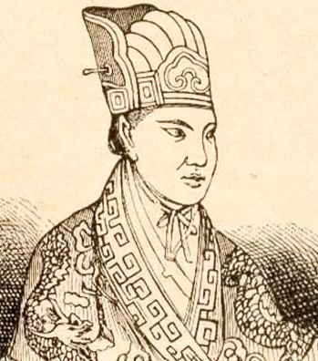
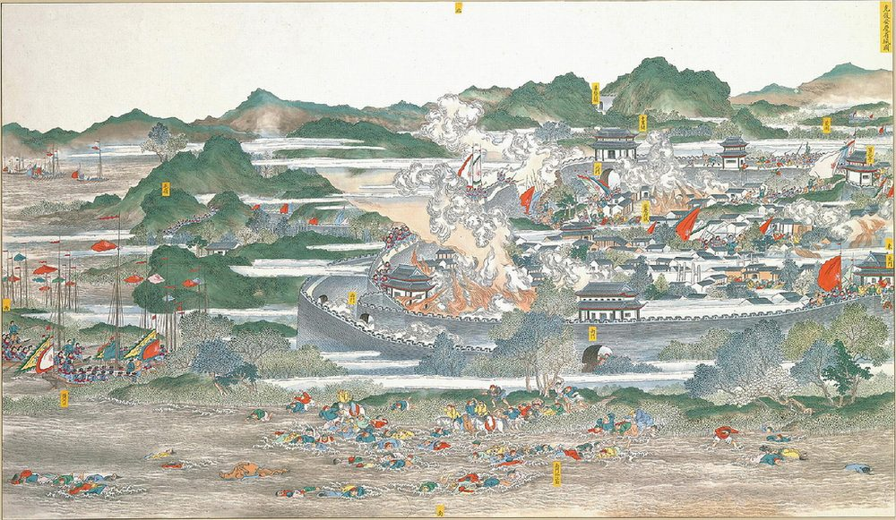
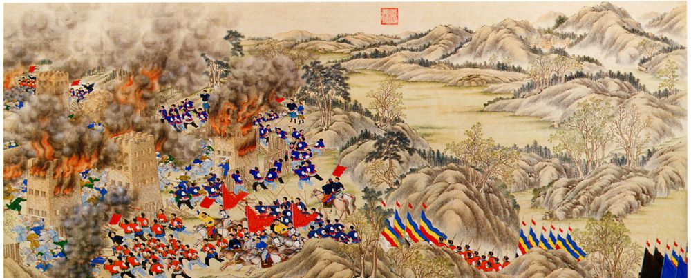
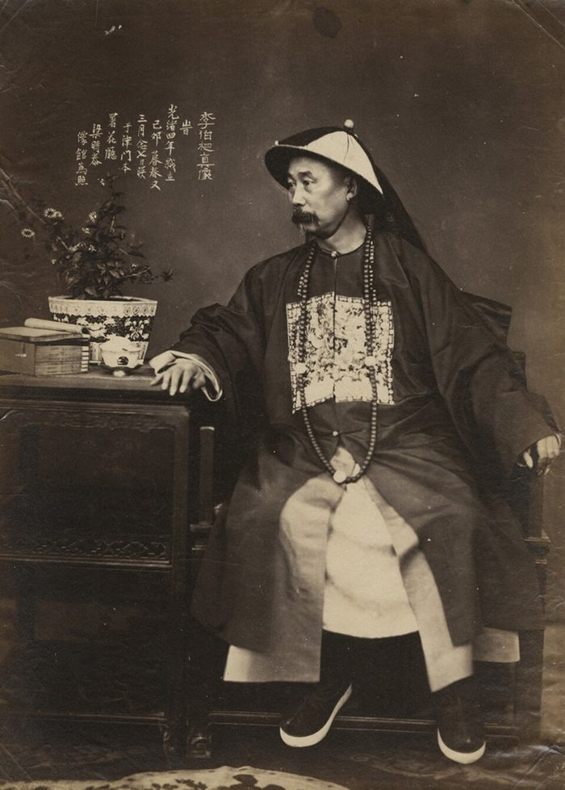
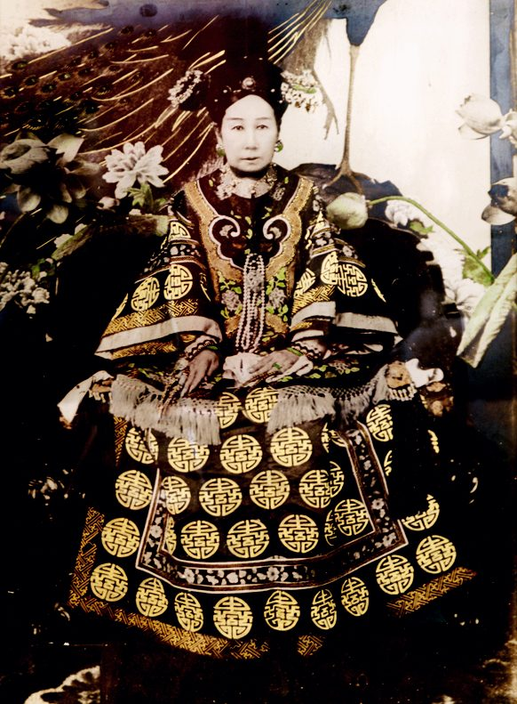
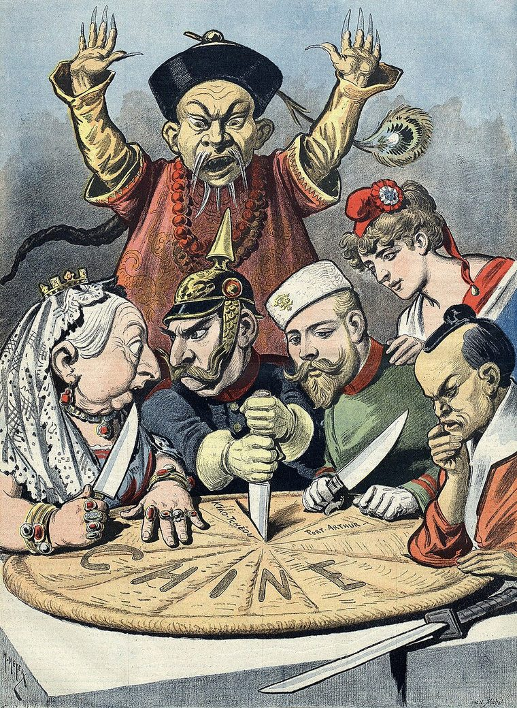
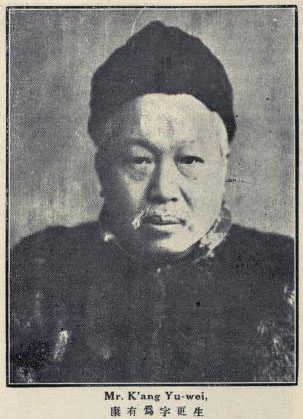

Unit 6 · Study guide · China
The Qing in Crisis 內憂外患
Rebellion at home, pressure from abroad, and the limits of reform, 1800–1901
ContentsOverview
The unit in one paragraph
pp. 314, 331–332
In the early 1800s the Qing showed the classic signs of dynastic decline: a population too large for its land, falling living standards, empty treasuries, and armies that no longer worked. Then came the shocks. Britain won the Opium War (1839–1842), and the Taiping Rebellion (1851–1864), joined by the Nian and Muslim revolts, killed tens of millions. The dynasty survived because Chinese officials like Zeng Guofan raised new armies and then launched Self-Strengthening. Yet reform was never deep or fast enough. Defeats by France (1884) and Japan (1895), the scramble for concessions (1898), Empress Dowager Cixi's reversal of the Hundred Days reforms, and the Boxer disaster (1900) left China humiliated and deep in debt. By 1900 educated Chinese felt that Chinese civilization itself, not just the dynasty, was at stake. pp. 314, 331–332
- Why was China's encounter with the West so different in the 1800s than in the 1700s?
- How many of China's problems came from inside, and how many from outside?
- Does stressing Western imperialism make the West the actor and China only the reactor?
- Did it matter that China's rulers were Manchu?
- Were global capitalism and imperialism so stacked against China that other policies would have changed little?
Timeline at a glance
Trouble at home: people, money, and soldiers
pp. 314–316
Qing peace let the population boom: about 300 million around 1800 and about 400 million by 1850. Chinese tradition saw growth as a sign of prosperity. Farmers worked land harder, with more irrigation, fertilizer, and weeding, or moved to the edges of settled areas and the thinly peopled southwest. Only Manchuria was off limits, kept as a Manchu preserve. pp. 314–315
More people, the same government
The population doubled and tripled over the Qing, but the number of counties and county officials did not grow. Magistrates leaned on local elites, even for tax collection.
In the early 1800s China's standard of living fell behind Europe's. Farms shrank, surplus labor pushed wages down, and fights over water and tenancy grew once the best land was taken. p. 315
How population pressure spread p. 315
An emperor short of money pp. 314–315
Under Qianlong the state could still help the poor. In the 1800s even a hard-working ruler like the Daoguang emperor (r. 1821–1850) never had enough revenue for public works and relief. He set an example of frugality and ordered cuts, but the money situation kept worsening.
Daoguang ordered the Grand Canal repaired, but after years of neglect more tax grain had to go by sea. That threw canal workers in the north out of work. pp. 315–316
The banners no longer worked in war; the state relied on militias and the Green Standard army. Daoguang could not abolish the banners and could only try to keep bannermen from turning beggar, bandit, smuggler, or addict. p. 315
First dug under the Sui, extended to Hangzhou under the Song and to Beijing under the Yuan, the canal crossed the Yellow River, so river dikes had to be kept up to stop silt from choking it. Unemployed boatmen later joined the Nian rebellion. See layer 1 of the map (Figure 8).
The Opium War, revisited
pp. 315–319 · covered in full in Unit 5
The first crisis of midcentury came from the sea. In brief: Britain paid for tea with Indian opium; China banned it; Lin Zexu destroyed the foreigners' stock in 1839; Britain's expedition forced the 1842 Treaty of Nanjing, the first unequal treaty. This unit picks up what the war revealed about the Qing. pp. 315–317
The Qing had no navy. British shallow-draft steamships sailed up rivers and landed troops anywhere. On one day in 1841 a single steam warship destroyed nine war junks, five forts, two military stations, and a shore battery. Qing soldiers fought rifles with swords, spears, clubs, arrows, and matchlocks. p. 318
A peace faction around the Manchu chancellor Mujangga wanted to avoid more fighting with the "sea barbarians"; a war faction of mostly Chinese degree holders backed Lin Zexu. Daoguang's successor (1850) dismissed Mujangga, recalled Lin, stalled on diplomats in Beijing, and fell short on the commercial clauses. p. 318
Guancheng, Manchu bannerman (c. 1790–1843)
- Youth Born into a poor banner family at the Zhapu garrison near Hangzhou; his mother and grandmother were daughters of Chinese bannermen. Studied Chinese and Manchu at banner schools.
- Age 27 Earned the juren degree through the Manchu quota; took a Chinese name, Guan Weitong.
- Late 1820s In Beijing for the jinshi exam, he mixed with Manchu nobles, who talked about Manchu court life in Chinese. Failed, but received an honorary degree.
- 1833–1842 County magistrate in Sichuan, facing a local non-Chinese revolt and locusts.
- 1842 Returned to find Zhapu wrecked by the British; many defenders had killed themselves and their families. Though ill, he wrote and printed a record of their heroism. His son issued a revised "Record of Martyrs" after his death.
Think about it (book's questions): What difference did it make that Guancheng was Manchu? Why record the stories of those who failed to defend their garrison?
The Taiping Rebellion, 1851–1864
pp. 318–321
Less than a decade after the Opium War came some of the most destructive rebellions in world history. The bloodiest, the Taiping, cost some 20 to 30 million lives. Like many earlier Chinese uprisings, it grew out of an unorthodox religious sect. p. 318

Hong Xiuquan's vision
Hong Xiuquan was a Hakka of humble background who spent years failing the civil service examinations. In visions, a golden-bearded old man and a middle-aged man called him "younger brother" and told him to destroy devils. After reading a missionary's Christian tract he decided he was Jesus's younger brother. p. 318
He studied briefly with a Christian preacher and built the God Worshipping Society, which won many Hakka followers. Hong was a visionary, not an organizer. In 1848 a charcoal maker named Yang Xiuqing claimed to speak with the voice of God the Father, which put him above Hong. p. 318
From sect to kingdom pp. 318–321
- 11850: Followers leave home, pool their money, and gather at Thistle Mountain in Guangxi, which becomes a huge armed camp.
- 21851: Hong declares himself king of the Heavenly Kingdom of Great Peace. Men cut off the queue. Disciplined believers rout the first Qing troops sent against them.
- 3On the march: Taipings smash temples, enroll captured villagers into separate men's and women's work and army teams, and often slaughter Manchu bannermen and their families, saying the Manchus had "stolen" China.
- 41853: Nanjing becomes the Taiping capital.
- 5Collapse within: When Yang claims God wants Hong beaten, Hong has him executed; the killer murders Yang's family and 20,000 followers, setting off revenge killings.
- 61864: Nanjing falls; none of the Taipings there survive. Others fight on in the south, Taiwan, and Vietnam (the Black Flags).
Utopia, and who rejected it
Land divided equally; men and women equal; women allowed to take civil service exams based on Hong's teachings and translated Bible passages; brigades of women soldiers; no opium, alcohol, footbinding, or prostitution.
The Chinese elite were horrified by its foreign gods and women soldiers. Missionaries, hopeful at first, judged its Christianity heretical. Westerners in Shanghai fought off Taiping attacks in 1860 and 1862.
pp. 318–319
How the Qing finally won: a new kind of army pp. 319–320
Local officials and landlords organized their own defenses, and the court realized it would have to rely on such forces. It turned to Zeng Guofan (1811–1872), home in Hunan mourning his mother.
Zeng built 240 war junks to fight along the rivers, added some Western artillery, and retook Hunan bit by bit. It took twelve years and 120,000 troops. His relatives and protégés, among them Li Hongzhang and Zuo Zongtang, slowly strangled the Taiping capital. p. 320

Both the Taiping campaigns and the Qing campaigns against them were horrendous. A Western observer in 1865 described plains littered with skeletons and rivers full of corpses. Much of the lower Yangzi, China's most productive region, was ruined for a generation. p. 321
Other rebellions: north, southwest, northwest
p. 321
The Taipings were turned back in the north, but the north soon had its own uprisings. And as armies moved inland to fight the Taiping and Nian, revolts in the southwest and northwest got out of hand, feeding on ethnic hatred. p. 321
| Rebellion | Where | Who and why | How it ended |
|---|---|---|---|
| Taiping 1851–1864 | South and central China; capital Nanjing | Hakka-led religious sect with a utopian program | Zeng Guofan's army, 12 years and 120,000 troops |
| Nian 1853–1868 | North China, along the Grand Canal | Mounted bandit gangs of the poor and unemployed, swollen by the 1855 Yellow River flood; some joined only in spring and autumn | Zeng Guofan and Li Hongzhang, assigned in 1865 |
| Muslim, Yunnan 1855–1873 | Southwest; sultanate at Dali | Han settlers seized Muslim lands and copper, gold, and silver mines; militias and assassinations followed | Qing played Muslim factions against each other, 1873 |
| Muslim, northwest | Gansu (all in rebel hands by 1867) | Spread of Sufism and long Han–Muslim hostility | Zuo Zongtang: five years of starvation sieges; then marched on into Xinjiang |

Zuo Zongtang (1812–1885) classed the Sufis as heterodox and ordered them slaughtered. Without his march into Xinjiang, that region might well have broken away from the Qing. Fear of Russian expansion there was a large part of the reason he went. p. 321
A century of conflict, on one map
Map 18.2 (p. 320) and pp. 316–330
Step through the layers to see where each crisis struck. Tap a marker for a note. Areas are approximate, after the textbook's Map 18.2.
The Second Opium War, 1856–1860
pp. 321–322 · see also Unit 5
While fighting the rebels, the court faced foreigners again. Russia pushed into the Amur valley against the 1689 border and, by treaties of 1858–1860, took eastern Manchuria's coast down to Vladivostok. Britain and France, claiming China had not carried out the earlier treaties, launched the Arrow War. p. 321
- 1End of 1857: Guangzhou captured and held for three years.
- 2Mid-1858: The Tianjin forts fall. Under threat of a march on Beijing, the Manchu negotiator agrees to diplomats living in Beijing, ten new ports, travel for Westerners including missionaries, a transit tariff of no more than 2.5%, and indemnities of 4 million ounces of silver to Britain and 2 million to France.
- 3A year later: Returning to ratify, the British insist on sailing up the river toward Beijing; Qing forces hold them off.
- 41860: 11,000 British and 6,700 French troops charge into Beijing. They loot and burn the 10-square-mile summer palace complex of about 200 buildings.
- 5Settlement: Talked into terms by the Russian ambassador, the Qing pays 16 million ounces of silver and gives Britain the Kowloon peninsula opposite Hong Kong.
Because the treaties gave them so much, the Western powers increasingly saw propping up the weak Qing as in their interest after 1860. p. 322
Self-Strengthening, 1861–1890s
pp. 322–324
In 1861 the Xianfeng emperor died, leaving a young son. The boy's uncle, Prince Gong, and his mother, Empress Dowager Cixi, became regents. A new reign meant new officials and a chance for new policies, and they were badly needed: the rebellions were unbeaten and the British and French had just left Beijing. p. 322
Feng Guifen's case for reform (1861) pp. 322–323
The scholar Feng Guifen (1809–1874) had watched Westerners defend Shanghai against the Taipings. China, he noted, was a hundred times bigger than France and two hundred times bigger than Britain, so why was it weak? He proposed:
- Hiring a few foreigners to set up shipyards and arsenals in each major port.
- Rewarding managers with examination degrees if their ships and guns matched the foreigners'.
- Translation bureaus for Western mathematics and science, and Western teachers for boys.
- Having lower officials elect high ones, with votes counted, and letting local elites nominate officials.
"Why are Western nations small and yet strong? Why are we large and yet weak?"Feng Guifen, 1861, quoted p. 322
An important minority, including Zeng Guofan, Li Hongzhang, and Prince Gong, came round to these arguments. Arsenals and dockyards were built, schools taught European languages and international law, and a foreign office was set up under Prince Gong. By 1880 China had embassies in London, Paris, Berlin, Madrid, Washington, Tokyo, and St. Petersburg. p. 323

Li Hongzhang takes the lead
After Zeng died in 1872, Li became China's leading political figure, governor-general of Zhili (modern Hebei) from 1872 to 1901 and head of one of the new armies. He and other modernizers came to see guns and ships as only the surface of Western power: China also needed railways, steamship companies, coal mines, telegraphs, and cotton mills. By the 1890s newspapers in Shanghai and Hong Kong covered world affairs. p. 323
| 1862 | Gun factories at Shanghai with British and German instructors |
| 1863 | Foreign language school in Shanghai |
| 1864 | Gun factory at Suzhou |
| 1865 | Jiangnan Arsenal at Shanghai, with a translation bureau (with Zeng) |
| 1867 | Nanjing Arsenal |
| 1870 | Expanded machine factory in Tianjin |
| 1872 | Officers sent to study in Germany |
| 1872 | Request to open coal and iron mines |
| 1872 | With Zeng, proposed sending teenagers to study in the U.S. |
| 1872 | China Merchants' Steam Navigation Company, a government-supervised merchant enterprise |
| 1876 | Seven officers sent to Germany |
| 1877 | Bureau for the Kaiping Coal Mines, Tianjin |
| 1878 | Shanghai Cotton Mill |
| 1880 | Naval academy in Tianjin |
| 1880 | Request to build a railroad |
| 1882 | Harbor and shipyard begun at Port Arthur |
| 1884 | Naval students and apprentices sent to Europe |
| 1885 | Military academy in Tianjin with German teachers |
| 1887 | Mint at Tianjin; gold mining in Heilongjiang |
| 1888 | The Beiyang (northern) fleet |
| 1891 | Paper mill in Shanghai |
| 1893 | Office for mechanized textile manufacturing |
Why it fell short pp. 323–324
For a while China seemed to be following the same road as Meiji Japan (Part 12), but resistance was much stronger.
Many thought copying the West only added to defeat. The high official Woren opposed a college for interpreters, arguing that no nation had ever been saved by mathematics. Even Zeng had little respect for merchants and profit.
The court never welcomed fundamental change, fearing for inherited values and its own power. Repeated humiliations bred bitterness, and giving in to foreigners was unpopular. When Guo Songtao, first ambassador to Britain (1877–1879), praised Parliament and British industry, he was shunned and his diary's printing blocks destroyed.
Empress Dowager Cixi
pp. 324–325
During Self-Strengthening, the most powerful person at court was Cixi. She entered the palace in 1852 and became empress dowager in 1861. When her son, the Tongzhi emperor, died of smallpox in 1875 at nineteen, she chose his four-year-old cousin, the Guangxu emperor (r. 1875–1908), so she could stay regent for years. p. 324
Cixi was a skillful political operator. She posed as a firm defender of Manchu privileges to reassure the Manchu establishment, which feared being sidelined. She needed modernizers like Li Hongzhang and rewarded them with titles, but checked them by also encouraging their conservative critics. p. 324
She formally retired in 1889, when Guangxu was nineteen, but still read all memorials and approved key appointments. With the court full of her supporters, the emperor had little room to act. p. 325

The tribute system unravels p. 324
Under Cixi the old tribute system was dismantled. Its three most loyal members (Korea, the Ryukyu Islands, and Vietnam) looked to Westerners like countries that were not fully independent. Japan pulled the Ryukyus away in the 1870s; France took Vietnam in the 1880s. Vietnam had long modeled its government on China's, followed Zhu Xi's Confucianism, recruited officials by examination, and wrote documents in Chinese.
The Sino-French War: a decision and its price pp. 324–325
- 11874–1882: France gains privileges in Vietnam by treaty, then seizes Hanoi. Vietnam's ruler asks China for help.
- 2The split: Realists (Prince Gong, Li) urge avoiding war. A shrill conservative group says giving in only invites more bullying.
- 3Cixi wavers: She has Li negotiate, then scraps the draft treaty under a flood of protest. Faced with a French ultimatum, she sides with the conservatives.
- 4August 23, 1884: The French fleet sails 20 miles up the Min River to Fuzhou, home of a quarter of China's new navy and its main shipyard.
The outcome was humiliating and a fiscal disaster. The one bittersweet consolation: Li had disobeyed Cixi's order to send his northern fleet to help. p. 325
Foreigners in China
pp. 325–326
After 1860 the Western population grew steadily and a distinct treaty-port culture took shape. In the foreign concessions British and Indian influence was especially strong, and foreign warships waited at the docks. Merchants and missionaries disliked each other but both turned to their consuls in disputes with Chinese, and attacks on missionaries brought gunboat diplomacy. p. 325
By 1900 there were 100 treaty ports. Their streetlights and tall buildings showed Chinese what Western "progress" meant, but residents also felt Western contempt. Westerners thought educated Chinese too obtuse to see how the world had changed. p. 325
The Imperial Maritime Customs began when consuls in Shanghai and Amoy collected tariffs during the Taiping war. Staffed at the top by Westerners, it also published trade reports and built telegraph and postal systems. p. 325
The missionaries pp. 325–326
The 1860 treaty let missionaries travel freely, and they came in large numbers. Unlike merchants, they lived among ordinary, poor Chinese, where they found most converts. Over the century more turned to medicine and education, which Chinese received better than preaching.
Missionaries spread Western learning better than they won converts: they wrote Chinese textbooks and translated dozens of works on science, mathematics, history, and international law, and Hong Kong mission hospitals trained hundreds of Chinese doctors. p. 326
The Tianjin Massacre, 1870 pp. 325–326
Anti-missionary tracts often accused orphanages of buying babies for evil purposes. In Tianjin the French had used a former palace as their consulate and built a cathedral on the site of a Chinese temple. Nuns there paid small sums for sick and dying children so they could baptize them.
- 1An epidemic kills many orphans; rumors say they were killed for body parts. The nuns refuse to return children to parents.
- 2A fight breaks out during an official search. The armed French consul shoots at the official, then at the city magistrate, missing both.
- 3The crowd kills the consul, his officer, twelve priests and nuns, seven other foreigners, and dozens of Chinese converts, and burns the cathedral and four churches.
- 4Though the consul started the violence, China pays reparations, punishes the rioters, and sends an apology mission to France.
The loser pays p. 325
Reparations imposed on China, 1842–1901
Ounces of silver, except 1901 (silver dollars). Bars share one scale, so the early payments barely show. Gold bars: payments for violence against missionaries; blue: payments to Japan. The 1901 sum was nearly twice the government's yearly revenue (p. 416).
The failures of reform, 1894–1898
pp. 326–328
Defeat by Japan, 1894–1895 p. 326
Japan had not worried China since Hideyoshi. In the 1870s it began making demands and by the 1890s seemed to want war. Korea gave the pretext: when an insurrection broke out there in 1894 both sent troops, Japan sank a steamship carrying Chinese soldiers, and both declared war (see Unit 9).
Of 12 Chinese ships, 4 were sunk, 4 badly damaged, and the rest fled. None of Japan's 12 ships was seriously damaged.
Japanese troops took the Shandong port by land and turned its guns on the Chinese fleet in the bay. A defeat not of weapons but of organization and strategy.
Li Hongzhang negotiated the peace in Japan. China paid a huge indemnity, ceded Taiwan and Liaodong, and let Japan open factories in China. European pressure returned Liaodong for a further payment. To pay, China borrowed from Russian, French, British, and German banks against its customs revenue, and stayed in debt to foreign banks until 1949. p. 326
The scramble of 1898 pp. 326–327
With European imperialism at its height, China's helplessness set off a scramble for concessions. It looked as if China might be carved up like Africa:
- Russia: the right to run the Trans-Siberian railway across Manchuria to Vladivostok, and a leasehold on the Liaodong Peninsula.
- Germany: seized the port of Qingdao in Shandong.
- Britain: took Weihaiwei, between the Russian and German zones, to keep both in check.
- France: concessions in the south and southwest, near its Southeast Asian colonies.
See layer 4 of the map (Figure 8).

Kang Youwei, Liang Qichao, and the birth of nationalism p. 327

Fear and outrage among the educated gave rise to nationalism. Its two leading voices both came from Guangdong:
Kang Youwei (1858–1927), a committed Confucian, reread the classics to argue that Confucius himself had been a reformer, not just a transmitter of old ways.
Liang Qichao (1873–1929), Kang's brilliant follower, went further: Self-Strengthening had focused too narrowly on technology. China needed cultural and political change, a national school system instead of the exams, national solidarity, and a state in which the people took part.
The banners were a hereditary military caste, somewhat like Japan's samurai. When Japan abolished samurai status, many samurai became officers or moved into skilled careers. Many bannermen, often illiterate despite banner schools, could not see how they would survive without government stipends. pp. 326–327
The Hundred Days, 1898 pp. 327–328
About 1,200 examination candidates in Beijing sign Kang's "ten-thousand-word petition" calling for an assembly elected by the people.
Study societies spread; Hunan founds 14, the largest with over 1,200 members. Some print newspapers; some sound anti-Manchu.
Guangxu has Kang present his ideas; Kang sends memorials on constitutions and assemblies, even hinting the queue should go.
Over the next hundred days, over 100 decrees: new exams, schools, banking, post, patents. The goal: a constitutional monarchy.
With Yuan Shikai's army, Cixi locks up Guangxu, executes the reformers she catches, and revokes every edict. Kang and Liang flee to Japan.
Kang's petition imagined ruler and people "of one body": with 400 million minds as one, any funds could be raised and any army trained. p. 327
Document: Mai Menghua, "Comparing the Power of China and Western Nations" (1898) pp. 328–329
Mai Menghua (1874–1915), a 24-year-old follower of Kang, answered conservatives who said reform would weaken the ruler. His surprising claim: China was weak not because its people had too little power but because its ruler had too little. Western governments reached far deeper into society.
| Area | In Western countries… | In China… |
|---|---|---|
| Births, deaths | Reported and recorded; omissions punished | Private matters beyond the state |
| Inheritance | Registered and taxed | Given as people please |
| Schooling | Required from age eight | Most people illiterate; the state does nothing |
| Money | One currency per country; only the state prints notes | Different money in each province; banks and changers issue their own |
| Buildings, roads | Inspected; littering punished | Build as you please; streets full of filth |
| Doctors, goods | Doctors certified; patents protected; bad goods banned | Quacks and fakes everywhere |
| Railways, mines | Nothing may block them | Conservatives block every major project |
Think about it (book's questions): What does Mai find attractive in a state that controls society deeply? Can a government be despotic and yet unable to control society?
The Boxer Rebellion, 1898–1901
pp. 328–330
In summer 1898, while Guangxu issued reform edicts, the Yellow River dikes broke in Shandong, flooding about 2,000 villages and making millions refugees. Land could not be planted even the next spring, and government relief failed. p. 328
German missionaries meddled in converts' lawsuits, claiming extraterritoriality for them, and forbade converts to pay for village festivals that paraded the local gods. p. 328
Small groups began looting missionaries' and converts' property. Foreigners called them Boxers for their martial arts; they also practiced spirit possession. Suppressed in Shandong in 1899, they drifted into other provinces and the capital, posting placards urging Chinese to kill foreigners and Chinese tainted by them, and blaming drought on the gods' anger at the foreigners. Most had been laborers, porters, or field hands hurt by the worsening economy. pp. 328–330
Cixi's gamble pp. 329–330
- 1The powers demand the attacks stop. Cixi, apparently hoping an aroused people could solve her foreign problem, does little.
- 2Eight powers announce troops to protect missionaries. On June 20, 1900, the German minister is shot dead in the street.
- 3Told by pro-Boxer Manchus that the powers want her retired and Guangxu restored, Cixi declares war on all eight.
- 4Foreigners barricade themselves in the Northern Cathedral and the legation quarter; the Boxers besiege them.
- 5An eight-nation force, Japan included, sends 20,000 troops. Cixi and the emperor flee by cart to Xi'an.
- 6By year's end 45,000 foreign troops are in north China, hunting Boxers for six months in raids on towns and villages.
In Shanxi the governor sided with the Boxers and executed missionaries and converts. But most governors-general, including Li Hongzhang and Yuan Shikai, simply ignored Cixi's declaration of war. p. 330
Examinations canceled for five years (to punish gentry who collaborated); responsible officials executed; forts and railway posts destroyed; and an indemnity of 450 million silver dollars. p. 330
The Qing's decline in comparative perspective
pp. 330–331
Late Qing reformers urged the court to follow Japan, which adopted Western technology, political ideas, and even dress. Ever since, people have asked why Japan modernized so much more successfully. The textbook warns against lumping the two together. p. 330
Neighbors (both "the Far East" to Europeans); Japan drew Confucianism and Chinese characters from China.
China was part of the Manchus' multiethnic empire, closer to the Mughal, Ottoman, Romanov, and Habsburg empires. Even China proper was far bigger than Japan in land and people, with all that meant for government.
Nor does the "carved up like Africa, taken over like India" comparison fit: only small pieces of the Qing were ruled directly by foreigners. The better comparison, the book argues, is with the Ottoman and Russian empires. p. 330
| Shared feature | Qing | Ottoman | Russian |
|---|---|---|---|
| Multiethnic, land-based Eurasian empire | ✓ | ✓ | ✓ |
| Ruled by a group claiming steppe horseman traditions | ✓ | ✓ | – |
| Skilled at defending long land borders, not a naval power | ✓ | ✓ | ✓ |
| 1700s population boom lowered living standards | ✓ | ✓ | ✓ |
| Rebellion and foreign pressure forced deficit military spending | ✓ | ✓ | ✓ |
| Lost its cavalry advantage as warfare changed | ✓ | ✓ | ✓ |
| Sea powers imposed terms and loans but did not take over | ✓ | ✓ | ✓ |
| Elite split: Westernizers vs. traditionalists | ✓ | ✓ | ✓ |
Sea powers kept these empires in a kind of debt bondage, enjoying treaty privileges without the duties of direct rule. Reforms came too little or too late, and could not outrun economic decline, social turmoil, and Western intrusion. Because the powers did not back challengers to the dynasties, radicals came to oppose both the foreigners and their own rulers, giving rise to modern nationalism. p. 331
China in 1800 vs. 1900
pp. 331–332
1800
- Few doubted China was the central kingdom.
- No country had more people.
- Chinese goods were in demand abroad.
- Borders had just been expanded.
- Chinese civilization seemed in no danger.
1900
- Peasant poverty, unrest, and bankruptcy.
- Repeated defeats by the West and by Japan.
- Deep debt from indemnities.
- Educated Chinese want drastic change.
- Not just the dynasty but Chinese civilization at stake.
p. 332
Test yourself
Flashcards
Who's who
| Person | Why they matter |
|---|---|
| Daoguang emperor | r. 1821–1850; frugal ruler facing empty treasuries and the Opium War |
| Mujangga | Manchu chancellor of the peace faction; dismissed 1850 |
| Guancheng | Manchu bannerman who recorded Zhapu's dead, 1842 |
| Hong Xiuquan | Hakka founder of the Taiping, "younger brother of Jesus" |
| Yang Xiuqing | Taiping leader who claimed to speak for God the Father; executed |
| Zeng Guofan | Raised the Hunan army that beat the Taipings; Self-Strengthener |
| Li Hongzhang | Zeng's protégé; leading statesman 1872–1901; dozens of modern projects; negotiated with Japan |
| Zuo Zongtang | Crushed the northwest Muslim revolt; marched into Xinjiang |
| Xianfeng emperor | Died 1861 during the Second Opium War aftermath |
| Prince Gong | Regent from 1861; ran the new foreign office |
| Empress Dowager Cixi | Dominant at court c. 1861–1908; 1884 war, 1898 coup, 1900 war |
| Tongzhi · Guangxu emperors | Cixi's son (d. 1875) and nephew (r. 1875–1908); Guangxu led the Hundred Days |
| Feng Guifen | 1861 essays: learn from the West and surpass it |
| Woren | Conservative who opposed the interpreters' college |
| Guo Songtao | First ambassador to Britain; shunned for praising it |
| Kang Youwei · Liang Qichao | Reformers and early nationalists; fled to Japan in 1898 |
| Mai Menghua | Kang's follower; argued China's ruler had too little power |
| Yuan Shikai | General whose army backed Cixi's coup; ignored her 1900 war |
Key dates
| 1800 · 1813 | Opium imports banned; then smoking |
| 1824 · 1850 | Grand Canal silts up; largely abandoned |
| 1839–1842 | Opium War; Treaty of Nanjing |
| 1851–1864 | Taiping Rebellion (Nanjing capital from 1853) |
| 1853–1868 | Nian rebellion |
| 1855 | Yellow River shifts north of Shandong |
| 1855–1873 | Muslim revolts in Yunnan and the northwest |
| 1856–1860 | Second Opium War; 1858 treaties; Beijing taken 1860 |
| 1861 | Regency; Feng Guifen's essays; Self-Strengthening |
| 1865 | Jiangnan Arsenal |
| 1870 | Tianjin Massacre |
| 1875 | Guangxu emperor enthroned at four |
| 1884 | Fuzhou fleet destroyed by France |
| 1888 | Beiyang fleet established |
| 1894–1895 | Sino-Japanese War |
| 1898 | Scramble; Hundred Days; Cixi's coup; Shandong flood |
| 1900 | Boxers besiege Beijing legations |
| 1901 | Boxer Protocol |
Discussion questions
Open each for points the reading gives you to work with.
How many of China's problems came from within, and how many from outside?
- Within: population pressure, fiscal shortfalls, a useless hereditary army, the canal's decay (pp. 314–316).
- Outside: wars, indemnities, foreign debt, the scramble (pp. 317, 321–327).
- Linked: the Nian drew on canal unemployment; the Boxers on flood and missionary grievances.
Why did the Qing survive the midcentury rebellions when so many earlier dynasties fell?
- The generals who beat the rebels did not fight each other for the throne (p. 314).
- The Chinese elite, horrified by the Taipings, rallied to the dynasty (pp. 319, 331).
- After 1860 the Western powers wanted the Qing propped up (p. 322).
Did it matter that China's rulers were Manchu?
- The Taipings and some study societies used anti-Manchu feeling.
- Cixi presented herself as defender of Manchu privileges.
- The banners could not be abolished; bannermen feared reform.
- Compare Guancheng's life (p. 319).
Why did Self-Strengthening fall short when Meiji Japan's reforms succeeded?
- Stronger conservative resistance (Woren, Guo Songtao's fate).
- A court wary of fundamental change; scarce money.
- China's size and its place in a multiethnic empire (p. 330).
- Was the problem weapons, or organization and strategy (Weihaiwei)?
How much blame does Cixi deserve?
- Her choices in 1884, 1898, and 1900 each ended in disaster.
- But she backed modernizers like Li and balanced factions skillfully.
- Governors-general ignored her in 1900: what does that say about her power?
Mai Menghua: can a government be despotic and yet unable to control society?
- Think about the small number of county officials for a huge population (p. 315).
- Consider what modern states did that the Qing did not (Table 3).
Key terms
Click to expand
Terms are grouped by topic. Where a term depends on another, the entry says what it builds on, so read those first. Hover or tap any dotted term in the text for a quick definition, or open ✎ at the bottom right. † marks a term or fact from outside the textbook.
Decline at home
- Dynastic decline
- The pattern Chinese history taught people to expect as a dynasty weakened: peasant poverty, social unrest, and government bankruptcy. The Qing seemed to be slipping into it in the early 1800s. pp. 314, 332
- Female infanticide
- Killing newborn daughters. Poor families who could raise only two or three children, and who saw sons as necessities, did this more in hard times. The result was a shortage of marriageable women. p. 315
- Floating population
- Young men who left home for work and never settled, taking seasonal farm jobs or working as boatmen, charcoal burners, sedan-chair carriers, beggars, or thieves. With few women to marry, they had little reason to stay home. p. 315Builds on: female infanticide
- Banners · bannermen
- The hereditary military force of the Qing, supported by state stipends (see Unit 2). By 1800 it no longer worked in war, but because it was bound up with Manchu identity and privileges it could not simply be disbanded. p. 315
- Army of the Green Standard
- A professional army of Chinese recruits. Along with local militias, it was what the Qing used against the late-1700s rebellions once the banners failed. p. 315Builds on: banners
- Tax grain
- Part of the land tax paid in grain and shipped from the rich southeast to the capital. Most of it traveled on the Grand Canal. p. 316
- Grand Canal
- The 1,747-km waterway linking Hangzhou to Beijing, with locks, dams, and sluice gates to climb 138 feet over the hills of Shandong. Over 50,000 boatmen and laborers moved tax grain on it. Neglect let silt block it in 1824; by 1850 it was largely abandoned. p. 316Builds on: tax grain
- Juren and jinshi degrees
- Civil service examination degrees: the juren was earned at the provincial level, the jinshi at the capital and needed for high office. Manchu bannermen had special quotas, and degrees could also be given as rewards or honors. pp. 277, 319, 322
The rebellions
- Hakka
- A large Han Chinese ethnic group with a distinct dialect, living mostly in the far south. Hong Xiuquan was Hakka, and his movement drew many Hakka followers. p. 318
- God Worshipping Society
- The religious sect Hong Xiuquan founded after reading a Christian tract. It adopted the Ten Commandments, belief in one God, and communal prayer and hymns, and told followers to destroy idols and give up opium, alcohol, footbinding, and prostitution. p. 318Builds on: Hakka
- Queue
- The Manchu hairstyle that the Qing forced on all Chinese men: the front of the head shaved and the rest worn in a long braid. Taiping men let their hair grow long, an act of open rebellion. pp. 273, 318
- Taiping · Heavenly Kingdom of Great Peace
- The state Hong Xiuquan proclaimed in 1851, with its capital at Nanjing from 1853. It promised equal landholding and equality of men and women. The Taiping Rebellion (1851–1864) cost some 20 to 30 million lives. pp. 318–321Builds on: God Worshipping Society, queue
- Zeng Guofan's army (a regional army)
- The force Zeng Guofan raised in Hunan. Confucian-educated officers recruited farmers from their own area; local tax money paid them well. Soldiers were loyal to their officers and officers to Zeng, making it essentially a private army. It took 12 years and 120,000 troops to defeat the Taipings. pp. 319–320Builds on: banners, Army of the Green Standard
- Nian
- Gangs of horse-riding bandits in north China who seized crops, robbed merchants, and kidnapped the rich. Unemployed canal boatmen and people made homeless by the 1855 Yellow River flood joined them. Their rebellion lasted 1853–1868. pp. 316, 320–321Builds on: Grand Canal
- Heterodox
- Outside the beliefs the state accepted as correct (orthodox). Zuo Zongtang classed Sufis as heterodox, like the White Lotus and Taiping sects, and ordered them killed. pp. 285, 321
- Sufism
- A mystical school of Islam. Its spread in the northwest (Gansu) was one root of the Muslim rebellion there, though much of the violence came from long Han–Muslim hostility. p. 321See also: heterodox
- Panthay sultanate
- The state Muslim rebels announced after taking Dali in Yunnan, where Han settlers had seized Muslim lands and mines. The Qing regained control in 1873 by playing Muslim factions against each other. pp. 320–321
- Black Flags
- Taiping armies that fled to Vietnam after Nanjing fell, where they fought against French colonial expansion. p. 321Builds on: Taiping
Treaties and foreigners
- Unequal treaty
- A treaty concluded at gunpoint that gave benefits to the foreign power but not to China, beginning with the Treaty of Nanjing (1842). See Unit 5. p. 317
- Extraterritoriality
- The treaty right of foreigners in China to be judged only by their own country's law, even in disputes with Chinese. German missionaries in Shandong claimed it for their converts too. pp. 317, 328Builds on: unequal treaty
- Most favored nation clause
- A treaty clause that extended to a power any new privilege China granted another. p. 317Builds on: unequal treaty
- Indemnity · reparations
- Money China was forced to pay after each defeat or incident, from 21 million ounces of silver in 1842 to 450 million silver dollars in 1901. China borrowed abroad to pay, which made reform harder. pp. 317, 325–326, 330
- Arrow War · Second Opium War
- The British and French attacks of 1856–1860, named after a ship, the Arrow, that gave Britain a pretext. It produced the 1858 treaties and the 1860 occupation of Beijing. pp. 321–322Builds on: unequal treaty
- Transit tariff
- A tax on foreign goods as they moved within China. The 1858 treaties fixed it at no more than 2.5 percent. p. 322Builds on: Arrow War
- Treaty port
- A city opened by treaty to foreign trade and residence. There were 100 by 1900, but only Shanghai, Tianjin, Hankou, Guangzhou, and Dalian became major centers of foreign life. (Hong Kong was a colony, not a treaty port.) p. 325Builds on: unequal treaty
- Foreign concession
- An area carved out of a treaty-port city, with foreign police and law courts and its own taxes, even though most residents stayed Chinese. The Qing accepted this with little protest. p. 325Builds on: treaty port
- Imperial Maritime Customs
- When the Taiping war disrupted tariff collection, British and American consuls collected tariffs themselves. This became a permanent customs service, run at the top by Westerners, that also reported on trade and built telegraph and postal systems. p. 325Builds on: treaty port
- Gunboat diplomacy
- Sending warships to the nearest port to threaten retaliation, as powers did when missionaries or their converts were attacked. p. 325
- Tianjin Massacre (1870)
- A riot sparked by rumors about deaths at a French Catholic orphanage. After the French consul fired at two officials, a crowd killed him, twelve priests and nuns, seven other foreigners, and dozens of Chinese converts. China paid reparations and apologized. pp. 325–326See also: indemnity
Reform
- Regent · empress dowager
- A regent rules on behalf of a ruler too young to govern. An empress dowager is the mother of a reigning emperor: Cixi was regent for her son Tongzhi (from 1861) and her nephew Guangxu (from 1875). pp. 322, 324
- Self-Strengthening
- The reform effort led by Zeng Guofan, Li Hongzhang, and Prince Gong after 1861: arsenals and shipyards, translated Western books, language schools, students sent abroad, a foreign office, and later mines, railways, and factories. Real, but never fundamental or fast enough. pp. 322–324, 331
- Foreign office (Zongli Yamen†)
- The office set up to manage diplomacy, with Prince Gong in charge. By 1880 China had embassies in seven capitals, from London to Tokyo. Its Chinese name, Zongli Yamen, is from outside the textbook. p. 323Builds on: Self-Strengthening
- Arsenal
- A factory that makes weapons. Li Hongzhang and Zeng Guofan founded the Jiangnan Arsenal at Shanghai in 1865, with a bureau to translate Western books. p. 323Builds on: Self-Strengthening
- Government-supervised merchant enterprise
- A company run by merchants under official oversight. Li supported the China Merchants' Steam Navigation Company on this basis in 1872. p. 323Builds on: Self-Strengthening
- Tribute system
- The Qing way of dealing with foreign states through missions and rituals acknowledging the emperor's superiority. Korea, the Ryukyus, and Vietnam were loyal tributaries; Japan took the Ryukyus in the 1870s and France took Vietnam in the 1880s. p. 324
- Scramble for concessions
- The rush, at its height in 1898, by European powers to grab ports, leaseholds, and rights in China. For a time it looked as if China might be divided like Africa. pp. 326–327
- Leasehold
- Territory transferred to a foreign power for a set term rather than ceded outright. Russia secured one over the Liaodong Peninsula in 1898. p. 327Builds on: scramble for concessions
- Nationalism
- The new attitudes that grew from educated Chinese fear and outrage as China suffered blow after blow: a sense of national solidarity and of the people's part in the state. Kang Youwei and Liang Qichao gave them shape. pp. 327, 331
- Study societies
- Reform clubs that Kang, Liang, and others began founding in 1895. Hunan alone had 14 in 1897–98. Some published newspapers; some voiced anti-Manchu feeling, which worried the court. p. 327Builds on: nationalism
- Constitutional monarchy
- A monarchy whose powers are set by a constitution, with assemblies in which the people take part. Kang urged one on the Guangxu emperor in 1898. p. 327
- Hundred Days (1898)
- The reforms the Guangxu emperor issued after meeting Kang Youwei in June 1898: over a hundred decrees on examinations, schools, banking, post, and patents, aiming at a constitutional monarchy. After three months Cixi staged a coup, locked up the emperor, and revoked them all. p. 327Builds on: study societies, constitutional monarchy
The Boxers and after
- Boxers
- Bands in Shandong who attacked missionaries and Chinese converts after the 1898 Yellow River flood. Foreigners named them for their martial arts. Driven out of Shandong in 1899, they spread to the capital, calling for the killing of foreigners. pp. 328–329
- Spirit possession
- A practice in which a god is believed to take over a person. It let Boxers communicate directly with their gods and gain a sense of personal power. p. 329See also: Boxers
- Legation quarter
- The district of Beijing where foreign diplomatic missions (legations) were located. Foreigners barricaded themselves there and in the Northern Cathedral in 1900. pp. 329–330
- Eight-nation force
- The army of eight foreign powers, including Japan, that sent 20,000 troops to lift the siege. By the end of 1900, 45,000 foreign troops were in north China. p. 330Builds on: legation quarter
- Boxer Protocol
- The 1901 settlement. China canceled the examinations for five years, executed the officials involved, destroyed forts and railway posts, and paid 450 million silver dollars. p. 330Builds on: indemnity, eight-nation force
- Westernizers vs. traditionalists
- The split within the elite of the Qing, Ottoman, and Russian empires over how to strengthen the state. Urban merchants usually accepted change more readily than the imperial elite. p. 331
Sources and further reading
- Main text: Patricia Buckley Ebrey & Anne Walthall, Modern East Asia from 1600: A Cultural, Social, and Political History, 3rd ed. (Cengage, 2013), Ch. 18, "China in Decline (1800–1900)," pp. 314–332, including Map 18.2 (p. 320), the tables on Li Hongzhang's projects (p. 323) and reparations (p. 325), the Biography of Guancheng (p. 319), the Material Culture feature on the Grand Canal (p. 316), and the Documents feature by Mai Menghua (pp. 328–329). Background from Ch. 16 (pp. 273, 277, 285) and Ch. 24 (p. 416).
- Outside facts (marked †): life dates for Li Hongzhang and Cixi from Encyclopaedia Britannica, "Li Hongzhang" and "Cixi"; the name Zongli Yamen from Britannica, "Gong Qinwang (Prince Gong)". Image titles, artists, and dates from each image's catalog record (see below).
- Explore further: MIT Visualizing Cultures, "The Boxer Uprising" and "The First Opium War"; Asia for Educators (Columbia University), "Qing China's Internal Crisis: Land Shortage, Famine, Rural Poverty"; the Archives of the Smithsonian National Museum of Asian Art (formerly the Freer and Sackler), which hold the Xunling photographs the textbook uses.
Image credits
- Ford & West, lithograph said to depict Hong Xiuquan, published 1853: public domain, Wikimedia Commons.
- Attributed to Wu Youru, Regaining the Provincial City of Anqing, 1886: public domain, Wikimedia Commons.
- Qingkuan, Capture of Shunning, Yunnan, c. 1886–1890, Palace Museum, Beijing: public domain, Wikimedia Commons (cropped to remove a modern caption).
- Liang Shitai, Portrait of Li Hongzhang, albumen print, c. 1870s: public domain, Wikimedia Commons.
- Xunling, Empress Dowager Cixi, hand-colored copy: public domain, Wikimedia Commons.
- John Thomson, interior ruins of the Chapel of the Sisters of Charity after the Tianjin Massacre, 1871: Wellcome Collection, CC BY 4.0 (cropped).
- Henri Meyer, "En Chine: le gâteau des rois et… des empereurs," Le Petit Journal, 16 January 1898, Bibliothèque nationale de France: public domain, Wikimedia Commons.
- Kang Youwei, from Who's Who in China, 3rd ed. (China Weekly Review, 1925): public domain, Wikimedia Commons.
- Conflict map: drawn for this course on Natural Earth 1:50m land and river data (public domain).


.JPG){kind=link}


Image titles and dates come from each image's catalog record, not from the textbook.